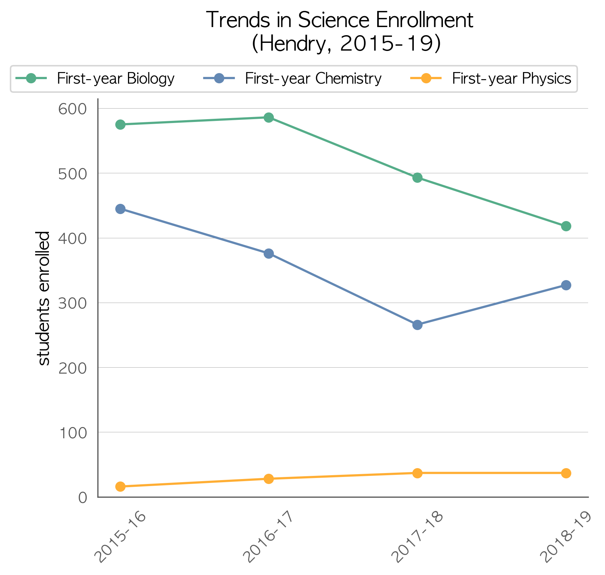
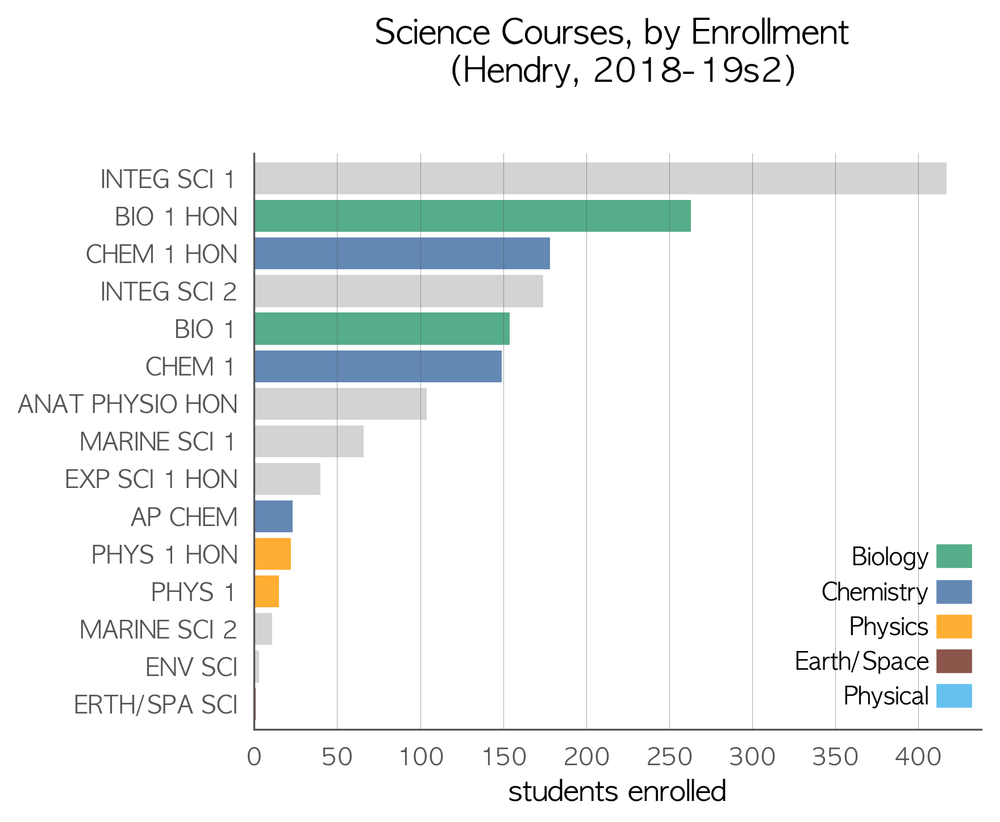
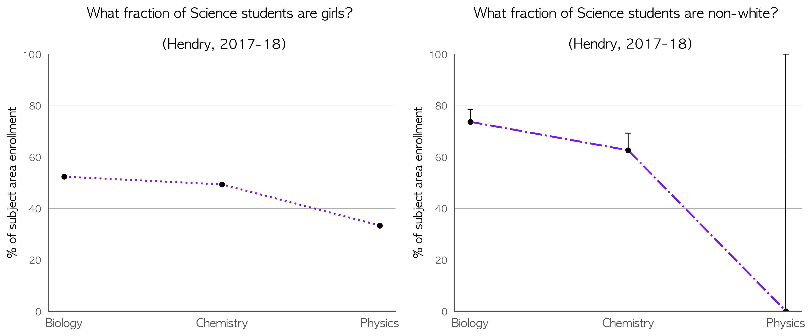

What does a healthy high school science program look like? Two of the biggies are:
Students will thank you later (and so will their parents). And it'll probably solve your STEM diversity problem. Universities and tech companies will thank you later, too. See the Why Physics? page for some of the research that supports this.
State exams, school grades, and Newsweek rankings are one measure of quality. For a predictor of students' career and college readiness, look at how many students take chemistry and physics instead. You can click the images to zoom. Plots for individual schools can be viewed here (see notes about the data and the end of this page).
States and other countries that excel in science preparation have chemistry and physics enrollment rates above 80%. Florida averages around 79% for chemistry, but only 22% for physics. Which courses are your students taking that may be less beneficial to them in the long term?
In high school science courses, total enrollment is the best predictor of gender and racial equity. When more of a school’s students are enrolled into Chemistry and Physics courses, disparities in gender and race tend to be reduced or eliminated entirely. Schools that require students to opt-in to chemistry and physics during registration exhibit the largest disparities in gender and race.
These analyses were performed by Adam LaMee. All data came from the Florida Department of Education. Course enrollment data is readily available from the FLDOE. Enrollment demographics were provided via data request from the fine folks at the Bureau of PK-20 Education Reporting and Accessibility. If you'd like to see your district's data in a different form or have edited plots, I'll be happy to help. Send an email to adamlamee@gmail.com.
"1st-year" courses were identified as typical first exposure in the content area by the course codes for 1, 1 honors, and pre-IB/pre-AP/pre-AICE. AP Biology and AP Physics 1 were also included, since some schools offer those as first-time courses. This was done in an effort not to double count students taking a second or third year in a content area (which is great). If it makes a difference to your district's plots, let me know and I’ll be happy to post updates.
In the couse enrollment bar chart, enrollment is shown for individual courses, sorted by highest enrollment and limited to no more than the 15 most-enrolled. Bars are color-coded for courses in Biology, Chemistry, Physics, Physical Science, and Earth/Space Science. Gray bars represent courses which should be treated as electives taken concurrently or after coursework in Biology, Chemistry, and Physics.
In the plots of enrollment diversity, each point includes errorbars, though most aren’t large enough to be visible. This arises from student privacy protections in the source data. When fewer than 10 students in a demographic category are enrolled in a course, the number enrolled is not published. The data represent a minimum count, so only the upper half of the errorbars are present. If your district is small or has low enrollment in a subject area, the errorbars may be so large as to make any inference meaningless.
School-level plots (linked above) don't include enrollment diversity plots since most school-level demographic data categories have fewer than 10 students, making analysis meaningless. The plots also include some middle schools. Due to the challenges inherent in a data set of this size, I opted to include some middle schools with large enrollment in high school course offerings instead of inadvertently dropping some smaller high schools. In a next iteration, I may devise a filter for that (e.g., more than n high school course offerings). If you're up for the challenge, drop me a line.